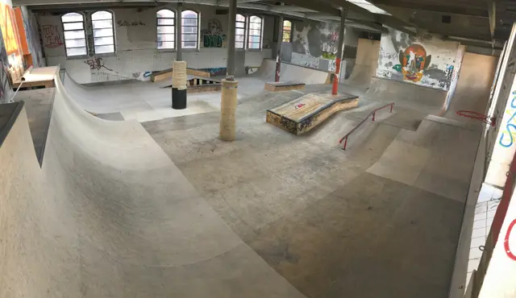
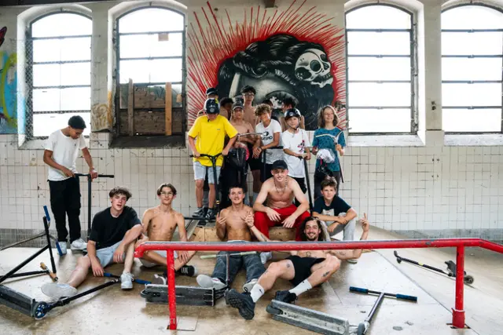

Anciens abattoirs · depuis 2003
Le seul skatepark couvert du canton de Neuchâtel
Les membres de l’association Park N’ Sun construisent, entretiennent et gèrent bénévolement ce skatepark dans les anciens abattoirs de La Chaux-de-Fonds, depuis 2003. Skate, trottinette freestyle, roller et BMX, sur des modules en bois construits à la main.
Ouvert 3 jours sur 7
Me, sa, di
14h–18h
- lundi : fermé
- mardi : fermé
- mercredi : ouvert de 14h à 18h
- jeudi : fermé
- vendredi : fermé
- samedi : ouvert de 14h à 18h
- dimanche : ouvert de 14h à 18h
Cases pleines : jours ouverts. Le jour d’aujourd’hui est encadré.
- par entrée
- 5.-
- abonnement annuel
- 150.-
Paiement sur place, en cash et TWINT uniquement.

= 1280px) 660px, (width >= 640px) 100vw, 100vw" width="1280" height="739" alt="Vue d’ensemble du skatepark rénové : courbes et modules en bois clair sous les grandes fenêtres cintrées des anciens abattoirs." />Actualité
Fin des rénovations et réouverture au public
Après des mois de rénovations, le skatepark est de nouveau ouvert au public. Les horaires restent inchangés : me, sa, di de 14h à 18h.
[À FOURNIR : date de réouverture]
Riders
Viens rider
Skate, trottinette freestyle, roller, BMX : 5.- l’entrée, sur place.
Parents
Cours et anniversaires
Cours de skateboard et de trottinette freestyle, et location du park hors des heures d’ouverture, par exemple pour un anniversaire.
L’histoire du nom
Il faisait froid, et il y avait une lampe.
À l’époque, le bâtiment était mal isolé. En hiver, il faisait si froid que les riders grelottaient, et plaisantaient qu’ils avaient « Parkinson ». Au-dessus des gradins, une énorme lampe chauffait fort : on l’appelait « le soleil du skatepark ». Les deux ont donné Park’n Sun.
Depuis les rénovations, il fait chaud même en hiver, et la lampe a disparu. Le nom est resté.
[À FOURNIR : année et témoins de l’anecdote, photo de la lampe et des gradins]

= 1280px) 320px, (width >= 640px) 50vw, 100vw" width="881" height="588" loading="lazy" alt="Une quinzaine de riders, trottinettes et skates en main, posent autour d’une barre rouge devant une grande fresque." />Mémoire
Notre histoire
Un park construit par ses membres depuis 2003, et un bowl qui a fait leur fierté, aujourd’hui démonté.
Vidéo
Vidéo de présentation
[À FOURNIR : vidéo de Léo]
Vidéo
d’ouverture du park, 16:9, avec sous-titres.
Ville, marques, entreprises
Partenaires et projet
Les anciens abattoirs dans Capitale culturelle 2027, la collaboration avec El Tony Mate (en vente au skatepark), et les soutiens du park.
L’association
Une vingtaine de membres, de 12 à 45 ans
L’association Park N’ Sun a pour objectif la promotion des sports de glisse urbains : skateboard, trottinette freestyle, roller et BMX. Depuis 2003, ses membres construisent, entretiennent et gèrent bénévolement le skatepark. C’est la seule infrastructure couverte du canton de Neuchâtel dédiée à ces sports.
Accès
Rue du Commerce 126
2300 La Chaux-de-Fonds
Dans les anciens abattoirs.